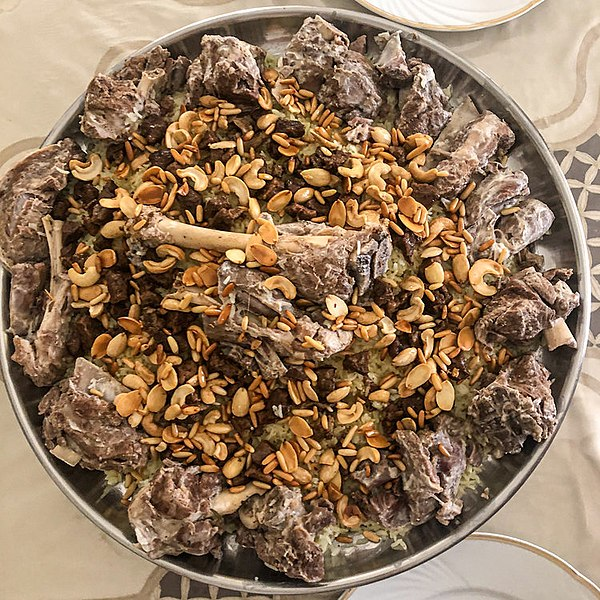

Mansaf is a traditional Jordanian dish, made from slow-cooked lamb served atop a delicious dirty rice, and drenched in a delightful yoghurt soupy-type-sauce.
I was taught how to cook this divine dish when I was 18 years old by some lovely Palestinian-Jordanian ladies, who helped me master the basics of cooking good Palestinian and Jordanian food, and though I haven't cooked it in over a decade, I remember it fondly.
Mansaf is, in my humble opinion, one of the best Levantine dishes you could ever eat. So get crackin', whoever comes across this page, and make your tastebuds weep with joy.